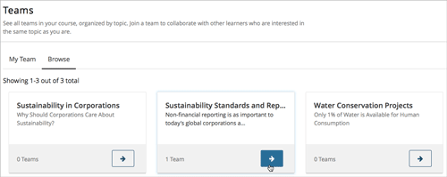
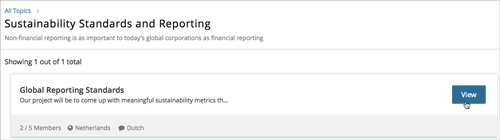
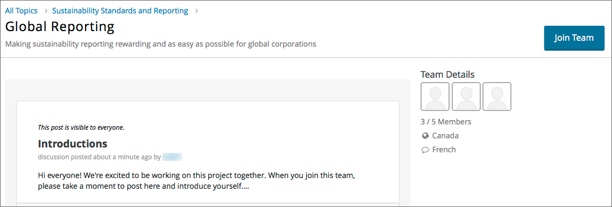
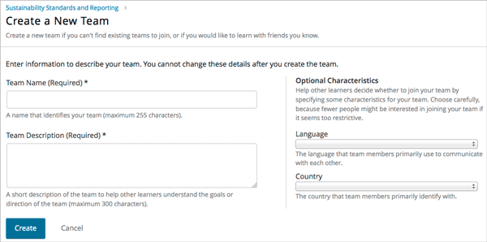

15. Working on Team Projects and Activities#
In some courses, you might be assigned activities or projects that require working in small groups, or teams. Course staff will create topics that you can choose from. You choose a topic that interests you, and join or form a team with other learners who have the same interest to work on the group activity or project together. You can join only one team in your course.
If your course includes teams, your instructor or course staff will provide information about how you should work in teams, guidelines for joining and creating teams, and using discussions within teams.
15.1. About Teams and Topics#
If your course uses teams, there is a Teams page where you can see the list of topics that the course team has created, and their descriptions.
You can browse the topics to find one that you are interested in working on. Then, view the list of teams that exist within that topic. Teams are always associated with a specific topic.
For each team, you can view the team members, team details, and discussions to help you decide whether you want to join a particular team. If you do not find a team that you want to join, you can create a new team in the topic. For more information, see Browse Topics and Find a Team to Join.
You can belong to only one team at a time. For information about joining and leaving teams, see Join a Team and Leave a Team.
15.1.1. Browse Topics and Find a Team to Join#
To browse topics and find a team to join, follow these steps.
In the course, select the Teams page.
Select the Browse tab.
On the Browse page, view the list of available topics.
You can sort the topics alphabetically by name, or by the team count in each topic.
When you have found a topic you are interested in, select the arrow button to see the teams that exist in that topic.

You can sort by teams that showed the most recent activity, or by teams with the most open slots.
You can also use keywords to search for teams within a topic. For more information, see Search for a Team.
Each team’s name and description are shown, as well as the number of team members, letting you know whether there is space for you to join.

To get a better sense of a team’s members, discussion, and communications, select View for a team.
On the Team Details page, you can browse the team’s discussion posts, but you cannot participate unless you are a member of the team.

Note
You can navigate from the Team Details page back to the list of teams in a topic or back to the list of all topics using the breadcrumb links at the top of the page.
15.2. Search for a Team#
You can use keywords to search for teams within a topic that match your interests.
To get a list of teams that match your search keywords, follow these steps.
In the course, select the Teams tab.
On the Teams page, select Browse, then select the topic in which you want to find a team.
In the search field, enter one or more keywords, then press Enter or select the search icon.
Teams within the topic that match your search are displayed.
To clear the existing search term, select the X in the search field.
Note
You can only use whole words for searching teams.
15.3. Join a Team#
When you have found a team you want to join, select Join Team.
Note
If a team is full, or if you already belong to a team, the Join Team button is not available.
You are added as a member. Your profile is added to the list of team member profiles, and you can participate in the team’s discussions. The team that you joined appears on your My Team page.
Note
You can only belong to one team at a time. If you belong to a team, but find another team that you want to join, you must leave the first team before you can join a new one. For information about leaving a team, see Leave a Team.
15.4. Leave a Team#
Note
EdX recommends that you do not change teams after work in a course has started without carefully considering the impacts to your work and that of your fellow learners.
If you must leave a team, make sure you communicate with your fellow team members and let them know why and when you are leaving. This is especially important if you are part of the way through your course, and you and your team have been working together on a project or activity.
To leave a team that you belong to, follow these steps.
On the Team Details page, select Leave Team.
In the confirmation dialog, select Leave Team.
After you leave a team, you are no longer visible in the team membership profiles list, or in the membership count. Although you can still view the team’s discussions, you can no longer participate in them.
15.5. Create a Team#
If you do not want to join any of the existing teams in a topic, you can create a new team. When you create a new team in a topic, you are automatically added as a member.
Note
You cannot create a team if you already belong to a team.
To create a team, follow these steps.
On the Teams page in the course, find a topic that you are interested in.
Select the topic’s arrow button to see the teams that exist in that topic.
At the bottom of the list of teams within the topic, select the create a new team in this topic link.

{kind=link}
{kind=link}
{kind=link}
{kind=link}
{kind=link}
{kind=link}
On the Create New Team page, add a name and description for the team.
In the description, include details about your proposed project or activity to help other learners to decide whether they want to join your team and work with you.
(Optional) Include some optional details for your team. You can specify a language that members would primarily use to communicate with each other, and a country that members would primarily identify with. Keep in mind that if your team details make the team membership seem too selective, other learners might be discouraged from joining.
Note
Be careful in entering your team details. After you save the details for your new team, you cannot change them, and you cannot delete your team.
{kind=link}
When you have finished adding your team details, click Create.
Your new team appears in the list of team under your selected topic. You are automatically added as a team member.
15.6. Participating in Team Discussions#
After you join a team, you can participate in discussions on your team page with other members.
Although you can view discussions in any team, you must belong to a team to add new posts and responses to the team’s discussion.
Team discussions work in the same way as your course discussions. For information about course discussions, see Anatomy of Course Discussions.
If you leave a team, you can view posts that are made, but you can no longer participate in that team’s discussions.